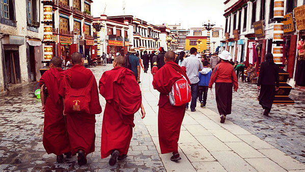

morly旅游圈
拉萨，简称“拉”，是中国西藏自治区的首府，具有高原和民族特色的国际旅游城市，是西藏的政治、经济、文化和科教中心，也是藏传佛教圣地。位于西藏高原的中部，喜马拉雅山脉北侧，海拔3650米（要防内源氧缺乏症），地处雅鲁藏布江支流拉萨河中游河谷平原，拉萨河流经此，在南郊注入雅鲁藏布江。
拉萨有许多古迹遗址，例如布达拉宫、大昭寺和罗布林卡被列为世界文化遗产。也有许多旅游景点和特产。拉萨是佛的国度，所以在景点中寺庙比较多一点。到了拉萨，在这个离天堂最近的地方，在这个洗涤灵魂的圣地，你会感受到来自灵魂深处的宁静。拉萨是一个生活节奏很慢的城市，在这里你可以远离城市的喧嚣，获得心灵的纯净。走在拉萨的街头，你会发现随处可见的特色小吃（例如拉萨街头的耗牛酸奶，香辣美味的炸土豆等），和神奇而又奇特的藏式饰品（例如西藏面具、唐卡等）。
去了拉萨，去看那秀丽的山水，看那雄伟的宫殿，去体会藏族人民的豁达乐观，去吃着数不尽的美食。去过拉萨的人大多都会对拉萨有着“剪不断、理还乱”的情丝。8月时去拉萨，你还可以参加一场盛大的节日。拉萨的街头，心灵的沉静。
拉萨旅游攻略：
第一天：抵达成都(交付入藏函正本)；
第二天：搭乘21:37成都(或22:25重庆)发车的青藏铁路进藏
第三天：在浩瀚的天路上奔驰
第四天： 火车抵达拉萨(专车接入酒店休息)
第五天：拉萨:布达拉宫、大昭寺、八廓街
第六天：拉萨:色拉寺、哲蚌寺
第七天：拉萨：藏王陵、药王山
第八天：结束开心旅程，返程回家！
内容整理至网络，如有侵权，请联系我们！1255394075@qq.com
